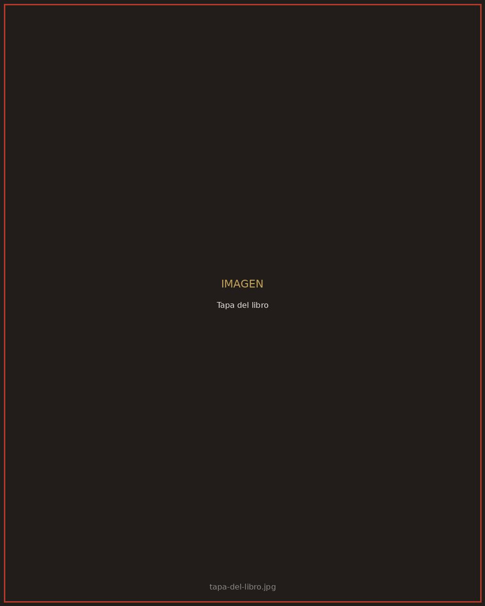

teatro consciente
Teatro Consciente es un teatro y una escuela de formación actoral , con producciones propias. Fundado hace más de 10 años por el dramaturgo y director, Ezequiel Sagasti.
¿Qué vas a encontrar acá?
Teatro Consciente recibe tanto a quienes nunca actuaron como a quienes ya tienen experiencia y quieren profundizar su formación. Está ubicada en Vicente López, a una cuadra de Puente Saavedra, con fácil acceso desde Capital Federal.

Formación
Iniciación sobre los fundamentos clásicos, profundidad con nuestro método propio y un programa con foco en la salida laboral.
En los primeros niveles se trabaja sobre los fundamentos del oficio: escenas, textos, análisis, construcción de personaje. Lo que todo actor necesita tener firme.
A medida que avanzás entra el método propio de la escuela: las imágenes resonantes. Se busca un teatro menos representado y más vivo: que lo que pasa en escena no venga decidido desde antes de subir, sino que suceda de verdad ahí arriba. La emoción no se fabrica: aparece. Y el personaje se arma desde ahí.
Es el resultado de años de investigación de Ezequiel Sagasti, que lo desarrolló en su libro “Teatro Consciente: hacia un teatro fenomenológico”.
Nada de esto queda en el aula. El programa te acerca desde el comienzo a las dinámicas reales del medio —cómo se ensaya, cómo se produce, cómo se sostiene una temporada— para que cuando llegue el momento de subir a escena, ya sepas de qué se trata.
Escenario
Tenemos nuestro propio teatro, donde poner en juego lo aprendido y ganar horas de vuelo reales sobre el escenario.
Sabemos que para este oficio la teoría y el entrenamiento no alcanzan si no terminan arriba de un escenario. El compromiso de nuestra escuela es que no solo te lleves herramientas, sino horas de vuelo reales.
Por eso, en 2024, Ezequiel fundó el teatro, donde damos clases, ensayamos y estrenamos las producciones de Teatro Consciente. Durante el año realizamos obras en las que los alumnos pueden audicionar para ser parte de los elencos.
Eso es lo que no da ningún ejercicio de clase. Buscamos que salgas con experiencia, no solo con formación.
Comunidad
Lo vincular es parte del ADN: una red que se acompaña, alienta y sostiene a lo largo del recorrido.
Hay cosas que solo aparecen cuando existe confianza.
La actuación exige exponerse, asumir riesgos y trabajar desde lugares muy personales. En este oficio lo personal y lo profesional no van separados. Para que algo suceda de verdad hace falta un grupo que acompañe, sostenga y cuide.
Por eso trabajamos con grupos reducidos que se sostienen en el tiempo, y generamos espacios para que los distintos niveles se encuentren, compartan experiencias y construyan comunidad.
Queremos que cada grupo sea un lugar donde puedas probar, equivocarte y animarte a ir un paso más allá. Donde la colaboración esté por encima de la competencia y el crecimiento de uno impulse el de todos.
Ahí se entrenan también las buenas prácticas del oficio: cómo se convive en un elenco, cómo se sostiene un ensayo, cómo se sale al medio sin dejar de cuidar al otro.
Es una decisión, no una casualidad: elegimos trabajar con gente que cuida y sostiene lo colectivo.
Apostamos a construir una escuela donde el talento importa tanto como el respeto, el compañerismo y los valores de cada persona que se suma.
Ezequiel Sagasti
Dramaturgo, director y docente. Estrenó como autor y director en salas comerciales como Metropolitan, La Comedia y Piccadilly, y en el circuito independiente. Dirigió para el Teatro Nacional Cervantes y el Teatro San Martín, y trabajó como guionista para Telefe y como coach actoral de actores reconocidos y premiados.
Hace más de 10 años comenzó con la escuela de Teatro Consciente y en 2024 fundó su propio teatro en Vicente López. Desde entonces, las clases, los ensayos y las producciones de Teatro Consciente tienen su espacio ahí.
Nuestro enfoque
A lo largo de más de diez años de investigación, Ezequiel Sagasti unió sus estudios en filosofía con el mundo actoral y desarrolló una metodología propia para el trabajo actoral, basada en la fenomenología de la percepción y, particularmente, en el pensamiento de Maurice Merleau-Ponty.
Durante siglos el teatro partió de una premisa: actuar es representar. Nuestro método parte de otra.
En lugar de fabricar la emoción desde adentro, el actor se abre a lo que pasa afuera —imágenes resonantes— y deja que la escena esté viva, que lo que suceda arriba del escenario sea verdadero.
Con este enfoque busca que sus alumnos alcancen la capacidad de habitar las escenas, en vez de representarlas.
Ezequiel desarrolló el método en el libro Teatro Consciente: hacia un teatro fenomenológico (2026), presentado en Buenos Aires y Madrid.

el sueño del teatro propio
Luego de muchos años, en 2024 logramos fundar nuestro propio teatro en Vicente López, Buenos Aires. Cuenta con una sala principal, equipada con iluminación, sonido, telón, escenario y capacidad para 50 butacas. Además tenemos una segunda sala que funciona como espacio social, un patio y la boletería.
CONOCER EL TEATRO →